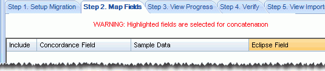

Note: Eclipse Administration allows you to migrate a case from Concordance® only if Concordance is installed and you hold a valid license for it.
The following procedures assume you are familiar with Concordance and your existing cases.
|
|
Note: Eclipse Administration allows you to migrate a case from Concordance® only if Concordance is installed and you hold a valid license for it. The following procedures assume you are familiar with Concordance and your existing cases. |
The following content can be migrated from Concordance .DCB files[1]:
Database fields
Tags
Redaction categories
Issue tags and/or notes
Images: If using Concordance Image, the migration will convert your image base, including annotations such as redactions. The following annotations are not converted:
|
Hollow Box Hollow Ellipse |
Solid Ellipse Line |
[1]If you
have Concordance .DAT files, see
In addition to migrating the case, Eclipse Administration makes it easy to evaluate and change the Concordance case definition as part of the case migration. Thus the efficiency of migration is combined with the ease of customizing the case to meet your needs.
Migrating a case includes six steps, as outlined in the Migrate from Concordance window and discussed in this section
|
|
Important: You cannot save a portion of a case migration (such as your entries for steps 1 and 2). If you exit Eclipse Administration before completing all four steps, you will lose your work. |
Familiarize yourself with the Concordance database and review the Migrate from Concordance screens to determine how your Concordance data should be handled. If importing into an existing Eclipse case, review that case as well.
To start the migration process, add basic information for the case:
Start Eclipse Administration and log in as a user who is a member of the Super Admin group.
On the Case Management ribbon, select Case Management > Migrate Case > Migrate from Concordance.
Click the Step 1 tab.
Select Concordance
Database: Click  ,
then navigate to and select the Concordance database (.DCB file). Click
OK.
,
then navigate to and select the Concordance database (.DCB file). Click
OK.
|
|
Note: Concatenated databases (.CAT files) should not be migrated. However, you can migrate individual .DCB files and/or import individual .DAT files for the databases comprising a .CAT file into one Eclipse case. |
To import into a current case:
Click the Import into an Existing Case option.
Select the needed managing client and case.
Review field data on the right side of the tab.
Skip to step 7.
To create a new case from the migrated data:
Click the Create a New Case option.
Select the needed managing client.
Complete the entries in the Create a New Case section. See the table in Step 1: Setting Up a Case for details.
Continue with one of the following procedures:
If you are creating a new Eclipse case: Create/Map Fields for a New Case.
If you are migrating into an existing Eclipse case: Step 2: Mapping Fields.
If you are creating a new case, on the right side of the Step 1 tab:
Review the Concordance fields.
For each field you want to map, click  .
.
Complete the Edit Field dialog box to define the field. See Step 3: Defining Database Fields for details on selections.
Click OK.
|
|
Tip:
|
When fields are defined, ensure all system fields are mapped. If you skip this step, Eclipse will create the fields but they will not be mapped to any of the Concordance fields. See Step 3: Defining Database Fields for details on system fields.
Click Map System Fields.
If the names of needed fields match those of system names but have not been mapped, click Map by Field Name. Any names that match (regardless of capitalization) will be mapped.
To map other fields, locate a system field that needs to be mapped in the Eclipse Field list, then double-click the corresponding Load File Field cell.
From the field list, select the field that should be used as the system field.
Repeat these steps for all other system fields to be mapped.
When finished, click OK.
When finished, continue to Step 2: Mapping Fields.
If you are creating a new case for the Concordance migration, use the Step 2 tab to review the fields created in Step 1 and complete migration choices:
If any field-mapping changes should be made, double-click the needed field in the Eclipse Fields column and select the correct field.
If any field(s) were defined in step 1 that should not be migrated, clear the Include option for the field(s).
Complete one of the following methods (auto-select or manual) to map the fields in your Concordance case to the Eclipse case. Note:
Some fields in the Concordance database can be omitted (not mapped) if needed.
More than one field in the import file can be mapped to a single field in the case (concatenated). For example, the import file may have two fields to define an author’s name (First Name, Last Name). In the Eclipse case, a single field may be used for this information (Name).
If you will be concatenating fields, ensure that those fields are of the same type.
If you are importing into an existing case, Eclipse Administration can attempt to match the fields based on the field name. For example, if the Concordance case contains a field called IMGKEY and the case contains a field named IMGKEY, they will be automatically matched.
To auto-select fields:
If you want to match by field name, ensure that your Concordance case includes field names in the header. In the Migrate from Concordance screen, click the Step 2. Map Fields tab.
Click the Auto-Select By Field Name button.
Evaluate the matching to determine if:
the auto-matching does not meet your needs,
some fields cannot be matched (in which case, the word “Select” in the Eclipse Field column will be red), and/or some fields should not be included.
For fields that should not be included, clear the Include option.
For other mapping problems, continue with Manually Match Fields below.
When all fields to be included are mapped, continue with Complete Migration.
To manually match the fields that have not been mapped or for which mapping needs to be corrected:
On the Migrate from Concordance screen’s Step 2 tab, evaluate the Concordance Field listing and sample data to determine which fields will be included in the import.
For each field to be migrated, ensure the Include option is selected.
For each included field, if the corresponding Eclipse Field listed is not correct, click the Eclipse field and choose the needed field type (new cases) or field name (existing cases). The list shows the case’s field names and types to assist you with matching.
|
|
Tip: Selecting a matching database field automatically selects the Include option for you. |
You will be alerted if you concatenate fields (match two or more fields to a single Eclipse field); see the following figure. If it is correct to have the fields concatenated, select a Merged Field Delimiter if needed (bottom right section of the screen). If selected, the delimiter will be included in the merged data to identify the original field delineation(s).

Repeat these steps for all fields to be included.
Continue with Complete Migration below.
Complete the following steps to select additional options based on the content of the Concordance case being migrated and complete the migration:
Ensure that the Step 2 tab is selected. The following options are at the bottom of this tab.
Tag Options: If the Concordance file being migrated includes tag data, select from one of the following options:
Ignore Private Tags: Select this option to not import any private tags in the Concordance case. If this option is not selected, Concordance private tags will become Eclipse public tags.
Make Root Level Tag Groups: Select this option to import tags into a tag group named for the first level of a set of nested Concordance tags. If not selected, tags will be imported to the group “Imported Tags.”
Issue Tags: If the Concordance file being migrated includes issue tags and you want to import them, select the Include Issue Tags option. In addition, select one of the following options:
Include in Same Group as Doc Tags: Select this option to include issue tags in tag groups defined for the case.
Create Issue Tag Group: Select this option to create a new group specifically for issue tags.
Issue Notes: If the Concordance file being migrated includes issue notes and you want to import them, select the Include Issue Notes option. In addition, select one of the following options:
Import into Field: Select the field into which the notes will be imported.
Create New Field: Enter a name for a new field into which the notes will be imported.
Options: Choose the following options as needed:
Merged Field Delimiter: If you have merged fields in Manually Match Fields, ensure that the correct delimiter is selected.
Date Format: Selected needed date option. If the Concordance date fields being migrated are true dates, they should be mapped to Eclipse DATE fields and the format should be Y/M/D. If dates are mapped to a text field, choose desired format.
Index after process completes: Select this option to create the index used for text searching after the migration completes. To skip indexing now (for example, to save time), do not select the option. Indexes can be managed after data is imported as explained in Manage Case Search Indexes.
When all options are selected, click Import Records. Your Concordance database will be imported into Eclipse.
Continue with Step 3: Viewing Progress below.
To assess the migration from Concordance:
In the Migrate from Concordance screen, click the Step 3 tab.
Review import details as they are presented.
After the migration completes, click View to examine and/or save the import log.
Take any of the following actions to evaluate migration results:
Once data is migrated into Eclipse, complete these steps to view and verify record details:
In the Migrate from Concordance screen, click the Step 4 tab.
Possible activities include:
Reviewing the Documents list and document/page details
Deleting a document or page
Checking/changing image (or native) file path
Viewing images
Complete these steps to check tags in your migrated case:
In the Migrate from Concordance screen, click the Step 5 tab.
Review listed tags and make a note of any changes that might be required.
When finished, continue with Steps6 and/or 7 (below).
Complete these steps to check redactions for your migrated case:
In the Migrate from Concordance screen, click the Step 6 tab.
Review listed redactions and make a note of any changes that might be required.
Continue with Step 7 below.
The Errors tab provides detailed information about migration errors. When errors exist, the tab name is red and the number of errors is indicated. To view errors:
In the Migrate from Concordance screen, click the Errors tab.
To view the first 25 entries in the error log file, click Display Errors. One line for each of the errors displays, indicating the type of error.
To view specific errors relating to the load file, click Create Loadfile View. Records with errors will be listed with problem data listed in red.
To save the load file, click Export and specify a location for the file. This file is named “FieldErrors” and will be a .DAT or .LFP file, depending on the type of errors. Use this file to correct load file errors, then re-import and overlay problem records.